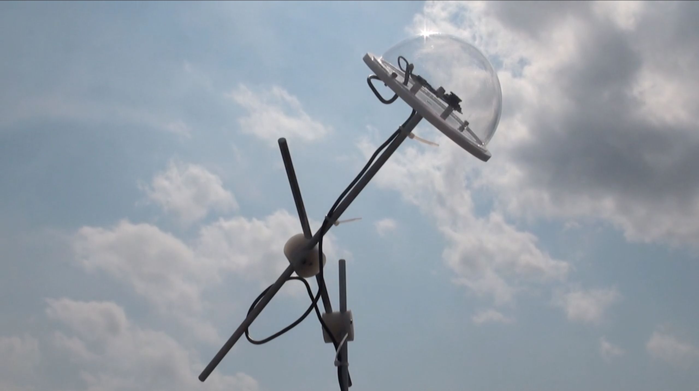
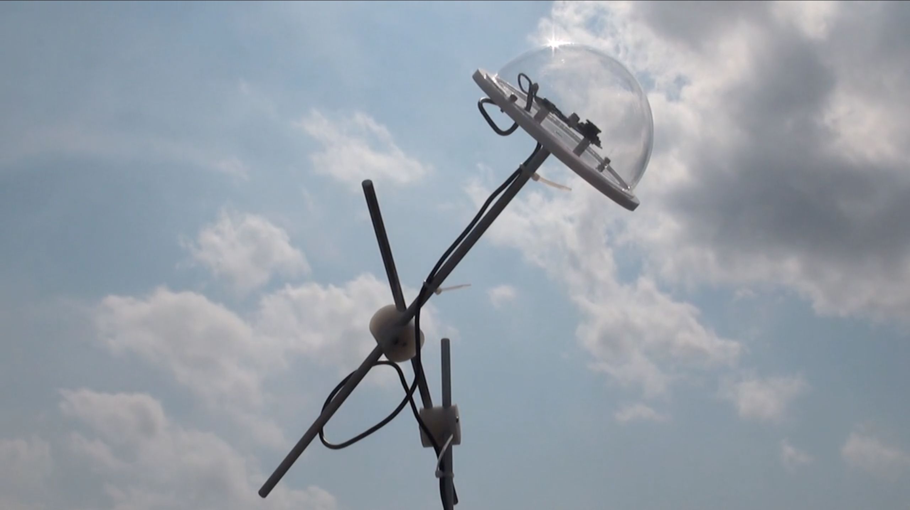
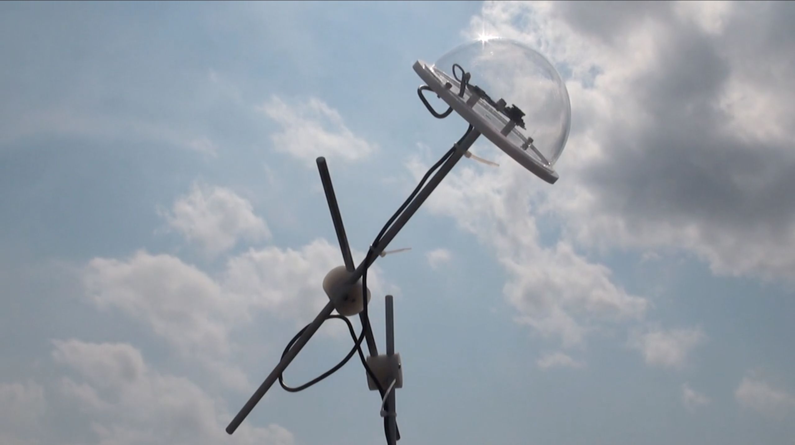

cloud piano from david bowen on Vimeo.
"cloud piano", a summary video of which you can view above, takes real time images of clouds and feeds that data through to be processed. The machine responds by pressing piano keys corresponding to the real-time images it "sees". I really like this piece because I think art seeks to focus on nature's beauty and reflect it through the artist's medium of choice, and making the playing of an instrument depend not on a constructed melody but on nature could open up discussion about patterns in nature versus how we seek out patterns in musical media.
